|
 |
| ЭРЕЛЗИ® (ERELZI) etanercept раствор д/п/к введения | ||||||||||||||||||||||||||||||||||||||||||||||||||||||||||||||||||||||||||||||||||||||||||||||||||||||||||||||||||||||||||||||||||||||||||||||||||||||||||||||||||||
|
Клинико-фармакологическая группа: Препарат с противовоспалительным действием. Ингибитор фактора некроза опухоли альфа (ФНО-α) Номер и дата регистрации: ЛП-006650 от 14.12.20 Код ATX: L04AB01 |
Владелец регистрационного удостоверения: зарегистрировано Представительство: | |||||||||||||||||||||||||||||||||||||||||||||||||||||||||||||||||||||||||||||||||||||||||||||||||||||||||||||||||||||||||||||||||||||||||||||||||||||||||||||||||||
Форма выпуска, состав и упаковка Раствор для п/к введения бесцветный или светло-желтого цвета, от прозрачного до слабо опалесцирующего; допускается наличие небольших полупрозрачных или белых плавающих частиц.
Вспомогательные вещества: лимонная кислота безводная - 0.786 мг, натрия цитрата дигидрат - 13.52 мг, натрия хлорид - 1.5 мг, сахароза - 10 мг, L-лизина гидрохлорид - 4.6 мг, натрия гидроксид - q.s. (для доведения при необходимости до рН 6.1-6.5), хлористоводородная кислота - q.s. (для доведения при необходимости до рН 6.1-6.5), вода д/и - до 1 мл. 0.5 мл (25 мг) - раствор в шприце для одноразового использования из прозрачного стекла* (1) - блистер (1, 2, 4) - пачка картонная вместе с инструкцией по применению. * шприц помещен в предохранитель иглы, снабжен иглой, закрытой резиновым колпачком, упором для пальцев и пластиковым поршнем. | ||||||||||||||||||||||||||||||||||||||||||||||||||||||||||||||||||||||||||||||||||||||||||||||||||||||||||||||||||||||||||||||||||||||||||||||||||||||||||||||||||||
| ||||||||||||||||||||||||||||||||||||||||||||||||||||||||||||||||||||||||||||||||||||||||||||||||||||||||||||||||||||||||||||||||||||||||||||||||||||||||||||||||||||
Описание препарата основано на официально утвержденной инструкции по применению и утверждено компанией-производителем для издания 2023 г. | ||||||||||||||||||||||||||||||||||||||||||||||||||||||||||||||||||||||||||||||||||||||||||||||||||||||||||||||||||||||||||||||||||||||||||||||||||||||||||||||||||||
Фармакологическое действие |
Фармакокинетика |
Показания |
Режим дозирования |
Побочное действие |
Противопоказания |
Беременность и лактация |
Особые указания |
Передозировка |
Лекарственное взаимодействие |
Условия хранения и сроки годности |
Условия реализации
Фармакологическое действие
Фактор некроза опухоли (TNF, ФНО) является основным цитокином, поддерживающим воспалительный процесс при ревматоидном артрите. Повышение концентрации ФНО также обнаружено в синовиальных оболочках и псориатических бляшках у пациентов с псориатическим артритом, а также в плазме крови и синовиальных тканях пациентов с анкилозирующим спондилитом. Этанерцепт является конкурентным ингибитором связывания ФНО с его рецепторами на поверхности клетки, и, таким образом, ингибирует биологическую активность ФНО. ФНО и лимфотоксин относятся к провоспалительным цитокинам, которые связываются с двумя четко различимыми рецепторами ФНО на поверхности клетки: 55-килодальтон (р55) и 75-килодальтон (р75). Оба рецептора ФНО присутствуют в организме в мембраносвязанной и свободной формах. Свободные (растворимые) рецепторы ФНО регулируют биологическую активность ФНО. ФНО и лимфотоксин существуют преимущественно как гомотримеры, их биологическая активность зависит от перекрестной сшивки рецепторов ФНО, находящихся на поверхности клетки. Димерные растворимые рецепторы, такие как этанерцепт, имеют значительно более сильное сродство к ФНО, чем мономерные рецепторы, и являются более сильными конкурентными ингибиторами связывания ФНО с его клеточными рецепторами. Кроме того, использование Fc-фрагмента иммуноглобулина как элемента связывания в структуре димерного рецептора удлиняет Т1/2 из сыворотки крови. Значительная часть патологических изменений в суставах при ревматоидном артрите и анкилозирующем спондилите, а также изменения кожи в виде псориатических бляшек возникают за счет воздействия провоспалительных молекул, вовлеченных в систему, контролируемую ФНО. Механизм действия этанерцепта, по-видимому, заключается в конкурентном ингибировании связывания ФНО с его рецепторами на поверхности клетки. Таким образом, этанерцепт предупреждает клеточный ответ, опосредованный ФНО, способствуя биологической инактивации ФНО. Этанерцепт также может модулировать (стимулировать или контролировать) биологический ответ, контролируемый другими молекулами, передающими сигнал по нисходящей (например, цитокины, молекулы адгезии или протеиназы). У пациентов с активным псориатическим артритом этанерцепт ингибирует прогрессирование структурных повреждений, улучшает физическую активность и снижает вероятность развития поражения периферических суставов. После прекращения терапии этанерцептом в течение месяца возможно обострение заболевания. Эффективность повторного назначения препарата в течение 24 месяцев после прекращения терапии сравнима с таковой у пациентов, не прерывавших лечение. Фармакокинетика
Фармакокинетические характеристики этанерцепта у пациентов с ревматоидным артритом, анкилозирующим спондилитом и псориазом сходны. Всасывание Этанерцепт медленно абсорбируется из места п/к инъекции, достигая Cmax приблизительно через 48 ч после введения однократной дозы препарата. Абсолютная биодоступность составляет 76%. При введении препарата дважды в неделю достигаются в 2 раза более высокие Css, чем после введения однократной дозы. После однократного п/к введения 25 мг этанерцепта средняя Cmax в плазме крови составляет 1.65±0.66 мкг/мл, AUC – 235±96.6 мкг×ч/мл. Видимого насыщения клиренса в границах дозы не наблюдалось. Введенная однократно доза этанерцепта 50 мг биоэквивалентна дозе, полученной путем двух инъекций по 25 мг препарата, сделанных практически одновременно. Распределение Зависимость концентрации этанерцепта от времени описывается биэкспоненциальной кривой. Среднее значение Vd составляет 7.6 л, в то время как Vd при равновесном состоянии составляет 10.4 л. Выведение Этанерцепт медленно выводится из организма. Т1/2 составляет около 70 ч. У пациентов с ревматоидным артритом клиренс составляет приблизительно 0.066 л/ч, что несколько ниже значения 0.11 л/ч у здоровых добровольцев. Фармакокинетика у особых групп пациентов Пожилые пациенты Клиренс и кажущийся Vd этанерцепта в группе пациентов от 65 до 87 лет сходны с таковыми у пациентов моложе 65 лет. Дети Ювенильный идиопатический артрит. Профиль концентраций в сыворотке крови аналогичен таковому у взрослых пациентов с ревматоидным артритом. Моделирование позволяет предположить, что у детей старшего возраста (10-17 лет) и взрослых пациентов концентрация этанерцепта в сыворотке крови примерно одинакова, а у детей младшего возраста он будет существенно ниже. Псориаз. Css этанерцепта в сыворотке крови детей в возрасте от 4 до 17 лет с псориазом и детей с ювенильным идиопатическим артритом, которые получали этанерцепт, соответственно, в дозе 0.8 мг/кг 1 раз в неделю (максимальная доза 50 мг в неделю) и 0.4 мг/кг 2 раза в неделю (максимальная доза 50 мг в неделю) на протяжении 48 и 12 недель были сходными (1.6-2.1 мкг/мл). Значение этого показателя совпадало с таковым у взрослых пациентов с псориазом, которым этанерцепт вводился в дозе 25 мг 2 раза в неделю. Нарушения функции почек и печени Несмотря на то, что у пациентов и здоровых добровольцев после введения меченого этанерцепта радиоактивная метка элиминируется через почки, у пациентов с острой почечной или печеночной недостаточностью не наблюдалось увеличения концентрации этанерцепта в плазме крови. Пол Явных различий в фармакокинетике этанерцепта у мужчин и женщин нет. Показания
Ревматоидный артрит
Псориатический артрит
Аксиальная форма спондилоартрита Анкилозирующий спондилит
Нерентгенологический аксиальный спондилоартрит
Псориаз
Ювенильный идиопатический артрит
Режим дозирования
Препарат вводят п/к. Лечение препаратом Эрелзи® должно назначаться и контролироваться врачом, имеющим опыт в диагностике и лечении ревматоидного артрита, псориатического артрита, анкилозирующего спондилита, нерентгенологического аксиального спондилоартрита, псориаза или ювенильного идиопатического артрита. Перед введением препарата Эрелзи® необходимо внимательно изучить инструкцию по применению шприца/шприц-ручки (в конце данного раздела). Взрослые Ревматоидный артрит Рекомендуемая доза составляет 25 мг препарата Эрелзи® 2 раза в неделю с интервалом 3-4 дня. Альтернативная доза – 50 мг 1 раз в неделю, которая может быть введена путем однократной п/к инъекции 50 мг или двух инъекций по 25 мг препарата, сделанных практически одновременно. Псориатический артрит Рекомендуемая доза составляет 25 мг препарата Эрелзи® 2 раза в неделю с интервалом 3-4 дня. Альтернативная доза – 50 мг 1 раз в неделю, которая может быть введена путем однократной п/к инъекции 50 мг или двух инъекций по 25 мг препарата, сделанных практически одновременно. Аксиальная форма спондилоартрита Анкилозирующий спондилит. Рекомендуемая доза составляет 25 мг препарата Эрелзи® 2 раза в неделю с интервалом 3-4 дня. Альтернативная доза – 50 мг 1 раз в неделю, которая может быть введена путем однократной п/к инъекции 50 мг или двух инъекций по 25 мг препарата, сделанных практически одновременно. Нерентгенологический аксиальный спондилоартрит. Рекомендуемая доза составляет 25 мг препарата Эрелзи® 2 раза в неделю с интервалом 3-4 дня. Альтернативная доза – 50 мг 1 раз в неделю, которая может быть введена путем однократной п/к инъекции 50 мг или двух инъекций по 25 мг препарата, сделанных практически одновременно. Псориаз Рекомендуемая доза составляет 25 мг препарата Эрелзи® 2 раза в неделю с интервалом 3-4 дня или 50 мг 1 раз в неделю (путем однократной п/к инъекции 50 мг или двух инъекций по 25 мг препарата, сделанных практически одновременно). В качестве альтернативы можно применять препарат Эрелзи® по 50 мг 2 раза в неделю на протяжении не более 12 недель. При необходимости продолжения лечения препарат Эрелзи® следует вводить в дозе 25 мг 2 раза в неделю или 50 мг 1 раз в неделю. Терапию следует проводить до достижения ремиссии и, как правило, не более 24 недель. Введение препарата следует прекратить, если после 12 недель лечения не наблюдается положительной динамики симптомов. В некоторых случаях продолжительность лечения может составлять более 24 недель. Продолжительность лечения У взрослых пациентов в зависимости от оценки врача и индивидуальных особенностей пациента терапию можно проводить непрерывно или с перерывами. При необходимости повторного назначения препарата Эрелзи® следует соблюдать длительность лечения, указанную выше. Рекомендуется назначать дозу 25 мг 2 раза в неделю или 50 мг 1 раз в неделю. Длительность терапии у некоторых пациентов может превышать 24 недели. В случае пропуска дозы в положенное время необходимо ввести препарат сразу же, как только об этом вспомнили, но при условии, что следующая инъекция должна быть не ранее чем через день. В противном случае необходимо пропустить забытую инъекцию и сделать вовремя очередную инъекцию. У пациентов пожилого возраста (старше 65 лет) не требуется корректировать дозу или способ применения. У пациентов с нарушением функции печени и почек не требуется корректировать дозу. Дети (старше 12 лет и имеющие массу тела 62.5 кг и более) У детей в возрасте младше 12 лет и с массой тела менее 62.5 кг применение препарата Эрелзи® противопоказано. Ювенильный идиопатический артрит Рекомендуемая доза составляет 25 мг препарата Эрелзи® 2 раза в неделю с интервалом 3-4 дня. Альтернативная доза – 50 мг 1 раз в неделю, которая может быть введена путем однократной п/к инъекции 50 мг или двух инъекций по 25 мг препарата, сделанных практически одновременно. Лечение препаратом следует прекратить, если после 4 месяцев терапии не наблюдается положительной динамики симптомов. Псориаз Рекомендуемая доза составляет 50 мг 1 раз в неделю. Длительность терапии составляет не более 24 недель. Введение препарата следует прекратить, если после 12 недель лечения не наблюдается ответа на проводимую терапию. При необходимости повторного назначения препарата Эрелзи® следует соблюдать длительность лечения, указанную выше. Разовая доза препарата составляет 50 мг 1 раз в неделю. Ниже представлены инструкции по подготовке и введению раствора для п/к введения препарата Эрелзи® в предварительно заполненных шприцах и в шприц-ручках. Пациенты или их родители/опекуны, которые будут проводить инъекции, должны быть проинформированы о том, как правильно проводить инъекцию. В случае, если в дальнейшем инъекции будут проводиться самим пациентом или его родителями/опекуном, то первое введение необходимо осуществить под контролем квалифицированного медицинского персонала. Перед введением препарата необходимо проверить дату окончания срока годности. В случае, если эта дата уже прошла, не следует использовать шприц или шприц-ручку. Препарат Эрелзи® следует хранить в оригинальной упаковке (картонной пачке) при температуре от 2°С до 8°С. Однократно препарат можно хранить при температуре 25±2°С в течение не более 28 дней (после этого следует вводить препарат, нельзя повторно помещать в холодильник). Выбор места инъекции Рекомендуются следующие места для введения препарата Эрелзи®: передняя поверхность средней трети бедра; нижняя часть живота, кроме области размером 5 см вокруг пупка; наружная поверхность плеча (см. рисунок ниже). Если пациент делает инъекцию себе, не следует использовать наружную поверхность плеча. 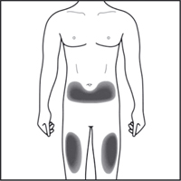 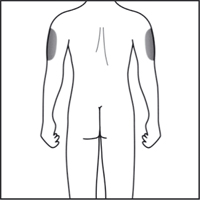 Каждую последующую инъекцию следует выполнять в новое место. Место новой инъекции должно быть на расстоянии не менее 3 см от места предыдущих инъекций. Не вводить препарат в участки, где есть болезненность, покраснение кожи, кровоподтек или уплотнение. Не следует вводить в участки со шрамами или растяжками. Для пациентов с псориазом: стараться не вводить препарат непосредственно в участки, приподнятые над поверхностью кожи, утолщенные, покрасневшие или в очаги с шелушением ("псориатические бляшки"). Инструкция по подготовке и введению раствора для п/к введения препарата Эрелзи® в предварительно заполненном шприце Подготовка к инъекции Препарат Эрелзи® нельзя смешивать в одном шприце или флаконе с любыми другими препаратами. Необходимо всегда класть шприц в места, недоступные для детей. 1. Извлечь картонную коробку с предварительно заполненными шприцами с препаратом Эрелзи® из холодильника и поместить ее на чистую, хорошо освещенную, ровную рабочую поверхность. Взять один предварительно заполненный шприц. Не встряхивать шприц. Поместить картонную коробку с оставшимися предварительно заполненными шприцами обратно в холодильник. 2. Оставить шприц с раствором Эрелзи® на 15-30 мин, чтобы он согрелся до комнатной температуры. Не открывать блистер и не снимать колпачок с иглы шприца, пока он не достигнет комнатной температуры. Не подогревать шприц каким-либо другим способом (например, в микроволновой печи или в горячей воде). 3. Тщательно вымыть руки с мылом в теплой воде. 4. Достать шприц из блистера и убедиться, что раствор в шприце прозрачный или слегка опалесцирующий, допускается наличие небольших полупрозрачных или белых плавающих частиц. В противном случае не вводить раствор. Использовать другой шприц, предварительно заполненный препаратом Эрелзи®. Не вводить препарат, если шприц сломан или предохранитель иглы активирован (см. рисунок ниже). 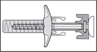 5. Также понадобятся: спиртовая салфетка и ватный шарик или марлевая салфетка. Подготовка участка кожи и введение раствора Эрелзи®
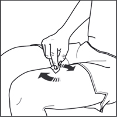 Снять колпачок с иглы. Необходимо соблюдать осторожность, не сгибать и не перекручивать колпачок во время удаления, чтобы не повредить иглу. 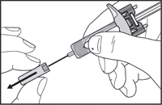 При удалении колпачка на конце иглы может появиться капля жидкости – это допустимо.
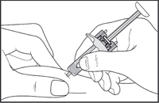 Затем надавить на поршень, чтобы ввести весь раствор медленно и с постоянной скоростью.
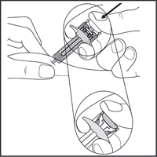 Удерживая поршень нажатым, осторожно извлечь иглу из кожи. Стараться держать шприц под тем же углом, под которым он был введен. 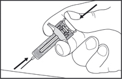 Осторожно отпустить поршень – игла автоматически закроется предохранителем. 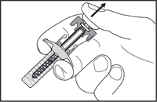 В месте инъекции может возникнуть небольшая кровоточивость. Следует надавить ватным шариком или марлевой салфеткой на место инъекции в течение 10 сек. Не следует тереть место инъекции. Если необходимо, можно наложить повязку. Утилизация использованного шприца Предварительно заполненный шприц предназначен только для одноразового применения. Не использовать шприц и иглу повторно. Не пытаться закрыть иглу колпачком повторно. Следует утилизировать иглу, шприц и колпачок в соответствии с указаниями врача или медсестры. При возникновении вопросов следует обратиться к врачу или медицинской сестре, которые работают с препаратом Эрелзи®. Инструкция по подготовке и введению раствора для п/к введения препарата Эрелзи® в предварительно заполненной шприц-ручке Предварительно заполненная шприц-ручка 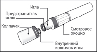 Пациенту не следует пытаться выполнить инъекцию самостоятельно, если он не понял, как следует надлежащим образом использовать шприц-ручку. При наличии вопросов, касающихся инъекции, необходимо задать их врачу или медицинской сестре. Подготовка к инъекции Препарат Эрелзи® нельзя смешивать в одном шприце или флаконе с другими препаратами. Необходимо всегда класть шприц-ручку в места, недоступные для детей. 1. Извлечь картонную коробку с предварительно заполненными шприц-ручками с препаратом Эрелзи® из холодильника и поместить ее на чистую, хорошо освещенную, ровную рабочую поверхность. Взять одну предварительно заполненную шприц-ручку. Не встряхивать шприц-ручку. Поместить картонную коробку с оставшимися предварительно заполненными шприц-ручками обратно в холодильник. 2. Оставить шприц-ручку с раствором Эрелзи® на 15-30 мин, чтобы она достигла комнатной температуры. Не снимать колпачок шприц-ручки. Не подогревать шприц-ручку каким-либо другим способом (например, в микроволновой печи или в горячей воде. 3. Следует убедиться, что раствор в шприц-ручке прозрачный или слегка опалесцирующий, допускается наличие небольших полупрозрачных или белых плавающих частиц. В противном случае не вводить раствор. Следует использовать другую шприц-ручку Эрелзи®. Не вводить препарат, если шприц-ручка сломана. 4. Также понадобятся: спиртовая салфетка и ватный шарик или марлевая салфетка. 5. Вымыть руки с мылом в теплой воде. Подготовка участка кожи перед введением раствора Эрелзи®
Снять колпачок шприц-ручки, повернув его, как показано на рисунке. Не следует пытаться закрыть шприц-ручку колпачком повторно. 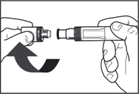 Следует использовать шприц-ручку в течение 5 мин после снятия колпачка.
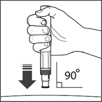 Введение препарата Эрелзи®
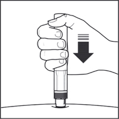 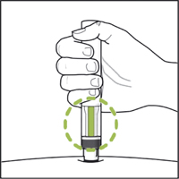 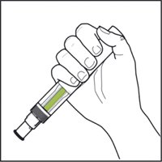 Примечание: если индикатор не стал полностью зеленым, следует обратиться к врачу. В месте инъекции может возникнуть небольшая кровоточивость. Следует надавить ватным шариком или марлевой салфеткой на место инъекции в течение 10 сек. Не следует тереть место инъекции. Если необходимо, можно наложить повязку. Утилизация использованной шприц-ручки Предварительно заполненная шприц-ручка предназначена только для одноразового применения. Не использовать шприц-ручку повторно. Не следует пытаться закрыть шприц-ручку колпачком повторно. Следует утилизировать шприц-ручку и колпачок в соответствии с указаниями врача или медсестры. При возникновении вопросов следует обратиться к врачу или медицинской сестре, которые работают с препаратом Эрелзи®. Побочное действие
Краткие сведения о профиле безопасности К наиболее распространенным нежелательным реакциям относятся реакции в месте инъекции (такие как боль, припухлость, зуд, покраснение и кровотечение в месте прокола), инфекции (такие как инфекции верхних дыхательных путей, бронхит, инфекции мочевого пузыря и инфекции кожи), аллергические реакции, образование антител, зуд и повышение температуры. При применении этанерцепта были также зарегистрированы серьезные нежелательные реакции. Антагонисты ФНО, такие как этанерцепт, отрицательно влияют на иммунную систему, а их применение может отрицательно повлиять на защитные свойства организма от инфекций и злокачественных новообразований. Серьезные инфекции поражают менее 1 из 100 пациентов, получающих лечение этанерцептом. Отчеты включали сообщения о летальных и угрожающих жизни инфекциях и сепсисе. Были также зарегистрированы случаи разных злокачественных новообразований при применении этанерцепта, включая рак молочной железы, легкого, кожи и лимфатических узлов (лимфома). Были также зарегистрированы случаи серьезных гематологических, неврологических и аутоиммунных реакций. К таковым относятся редкие сообщения о панцитопении и очень редкие сообщения об апластической анемии. При применении этанерцепта центральные и периферические демиелинизирующие заболевания наблюдались редко и очень редко, соответственно. Регистрировались редкие случаи волчанки, патологических состояний, связанных с волчанкой, и васкулита. Список нежелательных реакций в виде таблицы Следующий список нежелательных реакций основан на опыте применения препарата у взрослых пациентов в клинических исследованиях и на опыте пострегистрационного применения препарата. В рамках системно-органного класса нежелательные реакции распределены по следующим категориям частоты (прогнозируемое количество пациентов, у которых возникает реакция): очень часто (≥1/10), часто (от ≥1/100 до <1/10), нечасто (от ≥1/1000 до <1/100), редко (от ≥1/10000 до <1/1000), очень редко (<1/10000), частота неизвестна – по имеющимся данным установить частоту возникновения не представлялось возможным.
* См. "Описание отдельных нежелательных реакций" ниже. Описание отдельных нежелательных реакций Злокачественные новообразования и лимфопролиферативные заболевания Сто двадцать девять (129) новых злокачественных новообразований различных видов наблюдалось у 4114 пациентов с ревматоидным артритом, получавших лечение этанерцептом в ходе клинических исследований продолжительностью 6 лет, включая 231 пациента, в течение 2 лет получавших лечение этанерцептом в комбинации с метотрексатом в исследовании с активным контролем. Полученные в этих клинических исследованиях значения частоты и заболеваемости соответствовали значениям, ожидаемым для исследуемой популяции. В клинических исследованиях продолжительностью до 2 лет с участием 240 пациентов с псориатическим артритом, получавших этанерцепт, было зарегистрировано всего 2 случая развития злокачественных новообразований. В клинических исследованиях с участием 351 пациента с анкилозирующим спондилитом, продолжительность которых превышала 2 года, было зарегистрировано 6 случаев злокачественных новообразований у пациентов, получавших этанерцепт. В группе, включавшей 2711 пациентов с бляшковидным псориазом, получавших этанерцепт в двойных слепых и открытых исследованиях продолжительностью до 2.5 лет, было зарегистрировано 30 случаев злокачественных новообразований и 43 случая немеланоцитарного рака кожи. В группе, включавшей 7416 пациентов, получавших лечение этанерцептом в клинических исследованиях ревматоидного артрита, псориатического артрита, анкилозирующего спондилита и псориаза, было зарегистрировано 18 случаев развития лимфомы. В период пострегистрационного наблюдения также сообщалось о развитии злокачественных новообразований различных видов, включая рак молочной железы и легких, а также лимфому (см. раздел "Особые указания"). Реакции в месте введения препарата У пациентов с ревматическими заболеваниями, получавших этанерцепт, отмечалась значительно более высокая частота развития реакций в месте введения препарата по сравнению с группой плацебо (36% vs. 9%). Реакции в месте введения препарата, как правило, развивались в первый месяц применения. Средняя продолжительность реакций составляла приблизительно от 3 до 5 дней. В большинстве случаев лечение, в связи с развитием реакций в месте введения препарата, в группах, принимавших этанерцепт, не проводилось. Большинство пациентов, которым назначали лечение по данному поводу, получали средства для наружного применения, такие как кортикостероиды, или антигистаминные препараты внутрь. Кроме того, у некоторых пациентов отмечалось повторное развитие реакций в месте введения препарата, характеризующееся одновременным развитием реакций как в месте самых последних, так и предшествующих инъекций. Как правило, данные реакции носили транзиторный характер и при лечении повторно не развивались. В контролируемых исследованиях с участием пациентов с бляшковидным псориазом в течение первых 12 недель лечения примерно 13.6% пациентов, получавших лечение этанерцептом, развивались реакции в месте введения препарата по сравнению с 3.4% пациентов, получавших плацебо. Серьезные инфекционные заболевания В плацебо-контролируемых исследованиях повышение частоты серьезных инфекций (фатальных, угрожающих жизни, требующих госпитализации или в/в применение антибиотиков) не наблюдалось. Серьезные инфекции, включавшие абсцесс (различной локализации), бактериемию, бронхит, бурсит, воспаление подкожной клетчатки, холецистит, диарею, дивертикулит, эндокардит (подозреваемый), гастроэнтерит, гепатит В, инфекции, вызванные Herpes zoster, язву нижней конечности, инфекцию ротовой полости, остеомиелит, отит, перитонит, пневмонию, пиелонефрит, сепсис, септический артрит, синусит, инфекцию кожных покровов, язву кожных покровов, инфекцию мочевыводящих путей, васкулит и раневую инфекцию, были зарегистрированы у 6.3% пациентов с ревматоидным артритом, получавших лечение этанерцептом до 48 месяцев. В 2-летнем исследовании с активным контролем, в течение которого пациенты получали монотерапию этанерцептом, монотерапию метотрексатом или этанерцепт в комбинации с метотрексатом, частота возникновения серьезных инфекций была одинаковой в трех разных группах. Тем не менее, нельзя исключить вероятность того, что применение этанерцепта в комбинации с метотрексатом могло быть связано с повышением риска развития инфекций. В плацебо-контролируемых исследованиях продолжительностью до 24 недель не было выявлено различий в частоте возникновения инфекций между группами пациентов с бляшковидным псориазом, получавших этанерцепт и плацебо. Серьезные инфекции, развивавшиеся у пациентов, получавших лечение этанерцептом, включали воспаление подкожной клетчатки, гастроэнтерит, пневмонию, холецистит, остеомиелит, гастрит, аппендицит, стрептококковый фасциит, миозит, септический шок, дивертикулит и абсцесс. В двойных слепых и открытых исследованиях псориатического артрита была зарегистрирована серьезная инфекция (пневмония) у 1 пациента. Сообщалось о развитии серьезных и фатальных инфекций при применении этанерцепта, которые были вызваны бактериями, микобактериями (включая туберкулез), вирусами и грибами. В некоторых случаях инфекции развивались в течение нескольких недель после начала лечения этанерцептом у пациентов, имеющих помимо ревматоидного артрита предрасполагающие основные заболевания (например, сахарный диабет, хроническую сердечную недостаточность, с активными и хроническими инфекциями в анамнезе) (см. раздел "Особые указания"). Лечение этанерцептом может повышать смертность пациентов с подтвержденным сепсисом. При лечении этанерцептом отмечалось развитие оппортунистических инфекций, включая инвазивную грибковую, паразитарную (в т.ч. вызванную простейшими), вирусную (в т.ч. Herpes zoster), бактериальную (в т.ч. вызванную листериями и легионеллами), а также атипичную микобактериальную инфекцию. В объединенных данных клинических исследований общая частота оппортунистических инфекций у 15402 пациентов, получавших этанерцепт, составляла 0.09%. Частота явлений с поправкой на воздействие препарата составляла 0.06 явлений на 100 пациенто-лет. В период пострегистрационного применения препарата приблизительно половина всех клинических случаев оппортунистических инфекций во всем мире была обусловлена инвазивными грибковыми инфекциями. Чаще всего регистрировались инвазивные грибковые инфекции, вызванные грибками рода Candida, Pneumocystis, Aspergillus, и Histoplasma. Более половины летальных исходов пациентов с оппортунистическими инфекциями было обусловлено инвазивными грибковыми инфекциями. Большинство летальных исходов были зарегистрированы у пациентов с пневмонией, вызванной Pneumocystis, системными грибковыми инфекциями неустановленной этиологии и аспергиллезом (см. раздел "Особые указания"). Выработка аутоантител У взрослых пациентов с целью обнаружения аутоантител проводился анализ образцов сыворотки крови, взятых в разные временные точки. Среди пациентов с ревматоидным артритом, у которых проводилось определение антинуклеарных антител (АНА), доля пациентов, у которых впервые был получен положительный результат теста на антинуклеарные антитела (≥1:40), была выше у пациентов, получавших этанерцепт (11%), по сравнению с пациентами, получавшими плацебо (5%). Доля пациентов, у которых впервые отмечалась выработка антител к двуспиральной ДНК, также была выше при оценке с помощью радиоиммунологического анализа (15% пациентов, получавших этанерцепт, по сравнению с 4% пациентов, получавшими плацебо) и с помощью иммунофлуоресцентного анализа на клетках Crithidia luciliae (3% пациентов, получавших этанерцепт, по сравнению с отсутствием антител к двуспиральной ДНК у пациентов, получавших плацебо). Доля пациентов, получавших этанерцепт, у которых отмечалась выработка антикардиолипиновых антител, увеличивалась аналогичным образом по сравнению с пациентами, получавшими плацебо. Влияние длительного лечения этанерцептом на развитие аутоиммунных заболеваний неизвестно. У пациентов, включая пациентов с положительным ревматоидным фактором, были зарегистрированы редкие случаи образования других аутоантител в сочетании с волчаночноподобным синдромом или сыпью, которые по данным клинического обследования и биопсии совместимы с подострой кожной формой красной волчанки или дискоидной формой красной волчанки. Панцитопения и апластическая анемия В период пострегистрационного наблюдения сообщалось о случаях развития панцитопении и апластической анемии, некоторые из которых имели летальный исход (см. раздел "Особые указания"). Интерстициальные заболевания легких В контролируемых клинических исследованиях этанерцепта при его применении по всем показаниям частота (доля пациентов) нежелательных явлений в виде интерстициальных заболеваний легких у пациентов, получающих этанерцепт без сопутствующей терапии метотрексатом, составляла 0.06% (категория частоты "редко"). В контролируемых клинических исследованиях, в которых разрешалось сопутствующее применение этанерцепта и метотрексата, частота (доля пациентов) нежелательных явлений в виде интерстициальных заболеваний легких составляла 0.47% (категория частоты "нечасто"). В постмаркетинговых исследованиях сообщались случаи проявления интерстициальных заболеваний легких (включая пневмонит и фиброз легкого), некоторые из которых были со смертельным исходом. Сопутствующая терапия анакинрой В исследованиях, в которых взрослые пациенты получали сопутствующее лечение этанерцептом и анакинрой, наблюдалась более высокая частота возникновения серьезных инфекций по сравнению с применением этанерцепта в виде монотерапии, и у 2% пациентов (3/139) развивалась нейтропения (абсолютное количество нейтрофилов <1000/мм3. Во время нейтропении у одного пациента развился панникулит, который разрешился после госпитализации (см. разделы "Особые указания" и "Лекарственное взаимодействие"). Повышение активности печеночных ферментов В двойных слепых контролируемых клинических исследованиях этанерцепта при его применении по всем показаниям частота (доля пациентов) нежелательных явлений в виде повышения активности печеночных ферментов у пациентов, получавших этанерцепт без сопутствующей терапии метотрексатом, составляла 0.54% (категория частоты "нечасто"). В двойных слепых контролируемых клинических исследованиях, в которых разрешалось сопутствующее применение этанерцепта и метотрексата, частота (доля пациентов) нежелательных явлений в виде повышения активности печеночных ферментов составляла 4.18% (категория частоты "часто"). Аутоиммунный гепатит В контролируемых клинических исследованиях этанерцепта при его применении по всем показаниям частота (доля пациентов) нежелательных явлений в виде аутоиммунного гепатита у пациентов, получающих этанерцепт без сопутствующей терапии метотрексатом, составляла 0.02% (категория частоты "редко"). В контролируемых клинических исследованиях, в которых разрешалось сопутствующее применение этанерцепта и метотрексата, частота (доля пациентов) нежелательных явлений в виде аутоиммунного гепатита составляла 0.24% (категория частоты "нечасто"). Побочные реакции у детей Нежелательные явления у пациентов детского возраста с ювенильным идиопатическим артритом В целом частота и виды побочных реакций у детей были похожи на те, которые наблюдались у взрослых пациентов. Отличия от взрослых и другие характерные особенности описаны ниже. Инфекции, которые наблюдались в клинических исследованиях у детей с ювенильным идиопатическим полиартритом в возрасте от 2 до 18 лет, были легкой и умеренной степени выраженности, а их виды не противоречили тем, которые обычно встречаются среди амбулаторных пациентов. Сообщения о тяжелых нежелательных явлениях включали ветряную оспу с симптомами асептического менингита, которые разрешились без осложнений (см. раздел "Особые указания"), аппендицит, гастроэнтерит, депрессию/расстройства личности, язвы кожи, эзофагит/гастрит, септический шок, вызванный стрептококками группы А, сахарный диабет 1 типа и инфекции мягких тканей и послеоперационных ран. В одном исследовании у детей в возрасте от 4 до 17 лет с ювенильным идиопатическим артритом у 43 из 69 (62%) детей была зарегистрирована инфекция во время лечения этанерцептом после 3 месяцев исследования (часть 1, открытое), при этом частота и степень тяжести инфекций была аналогичной у 58 пациентов, которые завершили 12-месячную фазу открытой дополнительной терапии. Типы и частота нежелательных реакций у пациентов с ювенильным идиопатическим артритом были аналогичными таковым в исследованиях применения этанерцепта у взрослых пациентов с ревматоидным артритом, причем большинство были легкой степени тяжести. Несколько нежелательных явлений регистрировались чаще у 69 пациентов с ювенильным идиопатическим артритом, которые получали этанерцепт в течение 3 месяцев, в сравнении с 349 взрослыми пациентами с ревматоидным артритом. Эти явления включали головную боль (19% пациентов, 1.7 явления на пациенто-год), тошноту (9%, 1.0 явления на пациенто-год), боль в животе (19%, 0.74 явления на пациенто-год) и рвоту (13%, 0.74 явления на пациенто-год). В клинических исследованиях ювенильного идиопатического артрита было зарегистрировано 4 случая синдрома активации макрофагов. В пострегистрационный период были зарегистрированы случаи воспалительного заболевания кишечника и увеита у пациентов с ювенильным идиопатическим полиартритом, получавших лечение этанерцептом, включая очень незначительное количество случаев, свидетельствующих о возобновлении реакций при повторном назначении препарата (см. раздел "Особые указания"). Нежелательные явления у пациентов детского возраста с бляшечным псориазом В 48-недельном исследовании у 211 детей возрасте от 4 до 17 лет с детским бляшечным псориазом зарегистрированные нежелательные явления были аналогичными таковым в предыдущих исследованиях у взрослых с бляшечным псориазом. Противопоказания
С осторожностью: демиелинизирующие заболевания (рассеянный склероз), хроническая сердечная недостаточность (ХСН), иммунодефицитные состояния, заболевания, предрасполагающие к развитию или активации инфекций (сахарный диабет, гепатиты), алкогольный гепатит среднетяжелого и тяжелого течения, вирусный гепатит С, дискразия крови, заболевания нервной системы (неврит зрительного нерва, поперечный миелит). Применение при беременности и кормлении грудью
Беременность Влияние этанерцепта на исходы беременности было изучено в двух наблюдательных когортных исследованиях. В ходе наблюдательного исследования, посвященного сравнению исходов беременности у женщин, принимавших этанерцепт в I триместре, было зарегистрировано повышение частоты возникновения значительных врожденных пороков развития, чем в группе пациентов, не получавших этанерцепт или иные антагонисты ФНО. Типы значительных врожденных пороков соответствовали выявленным в общей популяции; каких-либо особых вариантов таких осложнений выявлено не было. Изменения частоты спонтанных абортов, мертворождений или незначительных врожденных пороков развития отмечено не было. В другом наблюдательном международном реестровом исследовании, в котором сравнивали риск возникновения нежелательных исходов беременности у женщин, получавших этанерцепт в течение первых 90 дней беременности, и у женщин, получавших терапию небиологическими препаратами, не было обнаружено повышения риска возникновения значительных врожденных пороков развития. Данное исследование также не выявило повышения риска возникновения незначительных врожденных пороков развития, преждевременных родов, рождения мертвого плода или инфекций в течение первого года жизни для младенцев, рожденных женщинами, получавшими этанерцепт во время беременности. Применять препарат Эрелзи® во время беременности возможно только при очевидной необходимости. Этанерцепт проникает через плацентарный барьер и обнаруживается в сыворотке крови младенцев, матери которых получали терапию этанерцептом во время беременности. Клиническое значение этого явления неизвестно, однако у таких младенцев может увеличиваться риск инфекции. Не рекомендуется введение живых вакцин младенцам в течение 16 недель после получения матерью последней дозы этанерцепта. Женщинам, способным к деторождению, следует рекомендовать использовать соответствующий способ контрацепции во избежание наступления беременности в течение терапии препаратом Эрелзи® и в течение 3 недель после ее прекращения. Грудное вскармливание Этанерцепт проникает в грудное молоко после п/к введения. Поскольку иммуноглобулины, как и многие другие лекарственные препараты, могут проникать в грудное молоко, следует либо прекратить грудное вскармливание, либо прекратить прием препарата Эрелзи® во время грудного вскармливания, принимая во внимание пользу грудного вскармливания для ребенка и пользу терапии для матери. Репродуктивная функция Доклинические данные по перинатальной и постнатальной токсичности этанерцепта и о влиянии этанерцепта на фертильность и общую репродуктивную способность отсутствуют. Особые указания
После прекращения лечения препаратом Эрелзи® симптомы заболевания могут рецидивировать. Инфекции Пациенты должны обследоваться на наличие инфекций до начала применения препарата Эрелзи®, в ходе лечения и после окончания курса терапии, принимая во внимание среднюю продолжительность Т1/2 этанерцепта, равную примерно 70 ч (7-300 ч). При применении препарата Эрелзи® сообщалось о сепсисе, туберкулезе, паразитарных инфекциях (включая вызванные простейшими организмами) и тяжелых инфекциях, в т.ч. оппортунистических, включая инвазивные грибковые инфекции, листериоз и легионеллез (некоторые с летальным исходом), вирусные инфекции (включая вызванные Herpes zoster). Наиболее часто регистрируемые инвазивные грибковые инфекции были вызваны Candida, Pneumocystis, Aspergillus и Histoplasma. Неправильная диагностика перечисленных инфекций, особенно грибковых и других оппортунистических инфекций, приводила к запоздалому назначению необходимого лечения и, в некоторых случаях, летальному исходу. Во многих случаях пациенты получали терапию другими лекарственными средствами, в т.ч. иммунодепрессантами. При обследовании пациентов нужно принимать во внимание возможность развития у них оппортунистических инфекций, например, эндемичных микозов. Пациенты, у которых новые инфекции развиваются на фоне лечения препаратом Эрелзи®, должны находиться под тщательным наблюдением. Лечение препаратом Эрелзи® следует прервать, если у пациента развивается тяжелая инфекция. Следует с осторожностью назначать препарат Эрелзи® пациентам с частыми или хроническими инфекциями в анамнезе или имеющим сопутствующие заболевания, которые могут способствовать развитию инфекций (например, тяжелый или плохо контролируемый сахарный диабет). Безопасность и эффективность препарата Эрелзи® у пациентов с хроническими инфекциями не оценивалась. Следует соблюдать осторожность при применении этанерцепта у пожилых пациентов и обращать особое внимание на развитие инфекций. Туберкулез На фоне терапии этанерцептом сообщалось о случаях активного туберкулеза, включая милиарный туберкулез и туберкулез внелегочной локализации. Среди пациентов с ревматоидным артритом, по всей видимости, отмечается более высокая частота развития туберкулезной инфекции. Развитие туберкулеза может быть связано с реактивацией латентной инфекции, а также с развитием новой инфекции. До начала терапии все пациенты должны быть обследованы на наличие активного или латентного туберкулеза. Обследование должно включать детальное изучение анамнеза относительно заболевания туберкулезом или наличия контактов с туберкулезными пациентами и данных о предшествующей или текущей иммуносупрессивной терапии. У всех пациентов должны быть выполнены необходимые скрининговые исследования, соответствующие локальным требованиям, обязательно включающие туберкулиновый кожный тест и рентгенографию легких. Следует учитывать возможность ложноотрицательного туберкулинового теста, особенно у пациентов в тяжелом состоянии или у пациентов с нарушенным иммунитетом. Также необходимо учитывать возможность развития туберкулеза у пациентов, у которых до начала терапии препаратом Эрелзи® не было обнаружено признаков туберкулезной инфекции. Лечащий врач должен контролировать состояние пациента на предмет появления признаков туберкулеза, в т.ч. у пациентов с изначально отрицательными результатами тестов на наличие туберкулезной инфекции. Не следует применять препарат Эрелзи® при наличии у пациента активного туберкулеза. В случае наличия неактивного туберкулеза перед началом терапии препаратом Эрелзи® необходимо назначение стандартной противотуберкулезной терапии в соответствии с локальными рекомендациями. В этом случае должно быть тщательно проанализировано соотношение пользы и риска лечения препаратом Эрелзи®. Все пациенты должны быть проинформированы о необходимости обращения к врачу при появлении на фоне лечения препаратом Эрелзи® или после него жалоб или симптомов, характерных для туберкулеза (например, упорного кашля, потери массы тела, субфебрилитета). Активация вируса гепатита В Сообщалось о случаях активации вируса гепатита В у носителей (в т.ч. у пациентов с положительным результатом на анти-HBc и отрицательным HBsAg), которые получали ингибиторы ФНОα, включая этанерцепт. Большая часть этих случаев имела место у пациентов, одновременно получающих другие лекарственные средства, подавляющие иммунную систему, которые также могут способствовать реактивации вируса гепатита В. Перед применением препарата Эрелзи® у пациентов, входящих в группу высокого риска заболевания гепатитом В, необходимо провести соответствующий диагностический поиск. Несмотря на то, что связь с применением этанерцепта не доказана, следует соблюдать особую осторожность при применении препарата Эрелзи® у пациентов-носителей вируса гепатита В. Необходимо проводить контроль состояния пациентов на предмет признаков гепатита В в период применения этанерцепта и в течение нескольких недель после окончания лечения. При появлении симптомов этого заболевания, следует обсудить возможность проведения специфической терапии. Обострение гепатита С Зарегистрированы случаи обострения гепатита С у пациентов, получавших терапию этанерцептом, однако причинно-следственная связь с применением препарата не доказана. Тем не менее, следует соблюдать осторожность при применении препарата Эрелзи® у пациентов с гепатитом С в анамнезе. Аллергические реакции Аллергические реакции часто сопутствуют применению этанерцепта. При любых тяжелых аллергических или анафилактических реакциях следует немедленно прекратить лечение препаратом Эрелзи® и начать соответствующее лечение. Иммуносупрессия При терапии ингибиторами ФНОα, в т.ч. препаратом Эрелзи®, существует возможность угнетения защитных механизмов организма человека против инфекций и злокачественных новообразований, поскольку ФНО участвует в процессах воспаления и модулирует клеточный иммунный ответ. Однако у взрослых пациентов с ревматоидным артритом на фоне лечения этанерцептом не было выявлено случаев угнетения реакций отсроченной гиперчувствительности, падения концентрации иммуноглобулина или изменения численности популяции клеток-эффекторов. У детей с ювенильным идиопатическим артритом в редких случаях развивалась ветряная оспа и симптомы асептического менингита, которые разрешались без осложнений. Пациентам, бывшим в контакте с больными ветряной оспой, следует временно прекратить лечение препаратом Эрелзи® и назначить профилактическое лечение иммуноглобулином против вируса Varicella zoster. Эффективность и безопасность лечения препаратом Эрелзи® пациентов с иммуносупрессией не изучались. Злокачественные и лимфопролиферативные заболевания В постмаркетинговом периоде (см. раздел "Побочное действие") были получены отчеты о различных злокачественных новообразованиях (включая карциному молочной железы и легкого, а также лимфому). В ряде контролируемых клинических исследований лимфома чаще диагностировалась у пациентов, принимающих ингибиторы ФНОα, чем у пациентов, которые их не получали. С другой стороны, эти случаи были редкими, а период наблюдения за пациентами из группы плацебо был короче, чем за пациентами, получающими лечение ингибиторами ФНОα. Имеются сообщения о развитии лейкоза на фоне терапии ингибиторами ФНОα. Существует высокий риск возникновения лимфомы и лейкоза у пациентов с ревматоидным артритом, являющимся длительным заболеванием, характеризующимся активным воспалением, что само по себе осложняет оценку риска. Последующий анализ клинических исследований этанерцепта у пациентов с ревматоидным артритом не подтвердил и не исключил повышения риска развития онкологических заболеваний на фоне применения этанерцепта. В соответствии с современными данными нельзя исключить возможный риск развития лимфомы, лейкоза или других злокачественных новообразований у пациентов, получающих ингибиторы ФНОα. Есть сообщения о развитии злокачественных новообразований (в половине случаев лимфом Ходжкина и неходжкинских лимфом), часть которых имели летальный исход, у детей и подростков, получавших лечение ингибиторами ФНОα, в т.ч. этанерцептом. Большинство пациентов получали сопутствующую терапию иммунодепрессантами. В других случаях имели место другие злокачественные новообразования, включая редкие варианты, связанные с иммуносупрессией. При применении препарата необходимо учитывать риск развития злокачественных новообразований. Рак кожи Меланома и рак кожи, не относящийся к меланоме (РКНМ), были зарегистрированы у пациентов, получавших лечение ингибиторами ФНОα, включая этанерцепт. Чаще всего РКНМ диагностируют у пациентов с псориазом. Были получены сообщения о развитии карциномы Меркеля. Для всех пациентов, входящих в группу риска, рекомендуются периодическое обследование кожных покровов. Выработка аутоиммунных антител Лечение препаратом Эрелзи® может сопровождаться образованием аутоиммунных антител (см. раздел "Побочное действие"). Эти антитела не относятся к нейтрализующим и обычно быстро исчезают. Не отмечено корреляции между образованием антител и клинической эффективностью препарата, а также частотой развития побочных реакций. Единичные случаи формирования аутоантител в сочетании с волчаночноподобным синдромом или сыпью, сходной с подострой формой красной волчанки или дискоидной формой красной волчанки (данные клинического обследования и биопсии) отмечались у пациентов, включая пациентов с ревматоидным артритом с положительным ревматоидным фактором. Гематологические реакции Сообщалось о редких случаях развития панцитопении и очень редких случаях апластической анемии, в т.ч. с летальным исходом, у пациентов, получавших этанерцепт. Следует проявить осторожность при применении препарата Эрелзи® у пациентов с указанием на заболевания крови в анамнезе. Все пациенты, их родственники/сиделки должны быть осведомлены о том, что если у пациента во время лечения препаратом Эрелзи® развиваются признаки и симптомы, характерные для инфекции или гематологических нарушений (например, продолжительная лихорадка, ангина, синяки, кровотечение, бледность), им следует немедленно обратиться за медицинской помощью. У таких пациентов рекомендуется срочно провести обследование, включая полный анализ крови. При подтверждении диагноза гематологического заболевания, лечение препаратом Эрелзи® следует прекратить. Поражение ЦНС Имеются редкие сообщения о развитии демиелинизирующих заболеваний ЦНС у пациентов, получавших терапию этанерцептом. Очень редко сообщалось о развитии периферических демиелинизирующих полиневропатий (включая синдром Гийена-Барре). Исследований применения препарата Эрелзи® у пациентов с рассеянным склерозом не проводилось, однако исследования других ингибиторов ФНО при этом заболевании показали возможность его обострения. Перед началом терапии препаратом Эрелзи® рекомендуется тщательно оценить соотношение польза-риск, неврологический статус у пациентов с демиелинизирующими заболеваниями, в т.ч. недавно возникшими, а также у пациентов, имеющих повышенный риск развития демиелинизирующего заболевания. ХСН Следует соблюдать осторожность в отношении назначения препарата Эрелзи® пациентам с ХСН. Сообщалось о редких (<0.1%) случаях развития ХСН, в т.ч. у пациентов без подтвержденного имеющегося заболевания сердечно-сосудистой системы. Некоторые из пациентов были моложе 50 лет. Данные ряда исследований позволяют предположить возможность ухудшения течения ХСН у пациентов, получающих этанерцепт. Комбинированная терапия Комбинация этанерцепта и метотрексата не дала неожиданных результатов при исследовании безопасности. Долгосрочное изучение продолжается. Данные по безопасности препарата Эрелзи®, который назначали в комбинации с метотрексатом, были схожи с таковыми при применении препарата Эрелзи® и метотрексата по отдельности. Долгосрочная безопасность применения препарата Эрелзи® в комбинации с другими базисными противовоспалительными препаратами не исследовалась. Изучение применения препарата Эрелзи® в комбинации с другой системной терапией или фототерапией псориаза не проводилось. Гранулематоз Вегенера Частота развития различного типа злокачественных опухолей внекожной локализации была значительно выше у пациентов с гранулематозом Вегенера, получавших этанерцепт, чем в контрольной группе. Поэтому препарат Эрелзи® не рекомендуется для лечения пациентов с гранулематозом Вегенера. Алкогольный гепатит Применение этанерцепта для лечения алкогольного гепатита не рекомендуется. Сахарный диабет Сообщалось о случаях гипогликемии на фоне терапии этанерцептом у пациентов, принимающих гипогликемические препараты, что требовало коррекции их дозы. Влияние на способность к управлению транспортными средствами и механизмами Изучение влияния на способность управлять автомобилем и пользоваться сложной техникой при применении препарата Эрелзи® не проводилось. В связи с этим управлять автомобилем или пользоваться сложной техникой следует с осторожностью. Передозировка
При передозировке препаратом Эрелзи® пациенту следует немедленно сообщить об этом врачу или фармацевту. Необходимо сохранить картонную упаковку препарата Эрелзи®, даже если она пустая, в соответствии с указаниями лечащего врача. Максимальная доза препарата Эрелзи® не установлена. В рамках клинического исследования здоровым добровольцам вводилась доза 60 мг/м2 однократно, что не привело к развитию лимитирующей дозу токсичности. При лечении пациентов с ревматоидным артритом не было зарегистрировано случаев превышения предельной токсичной дозы. Наивысшая доза, введенная в/в, составила 32 мг/м2 с последующим п/к введением 16 мг/м2 2 раза в неделю. Специфический антидот для препарата Эрелзи® неизвестен. Лекарственное взаимодействие
Анакинра На фоне комбинированной терапии этанерцептом и анакинрой наблюдалось значительное повышение частоты развития серьезных инфекций и нейтропении по сравнению с пациентами, которым вводили только этанерцепт или только анакинру. Совместное применение этанерцепта и анакинры не показало клинического преимущества, поэтому не рекомендуется. Абатацепт Одновременное применение абатацепта и этанерцепта сопровождалось повышением частоты серьезных нежелательных явлений. Данная комбинация лекарственных препаратов не продемонстрировала клинических преимуществ, поэтому не рекомендуется. Сульфасалазин У пациентов, которым на фоне лечения сульфасалазином вводили этанерцепт, описано значительное снижение числа лейкоцитов по сравнению с теми пациентами, которые принимали только этанерцепт или только сульфасалазин. Следует соблюдать осторожность при одновременном назначении этанерцепта и сульфасалазина. Отсутствие взаимодействия Не наблюдалось нежелательного взаимодействия при одновременном применении этанерцепта с глюкокортикоидами, салицилатами (за исключением сульфасалазина), НПВП, анальгетиками или метотрексатом. Метотрексат Метотрексат не оказывает влияния на фармакокинетику этанерцепта. Влияние этанерцепта на фармакокинетику метотрексата у человека не изучалось. Дигоксин Не обнаружено клинически значимого влияния на фармакокинетику этанерцепта. Варфарин Не обнаружено клинически значимого влияния на фармакокинетику этанерцепта. Вакцинация Живые вакцины не следует вводить на фоне лечения этанерцептом. Нет данных о вторичной передаче инфекции через живую вакцину пациентам, получающим этанерцепт. Рекомендуется, чтобы до начала лечения этанерцептом дети и подростки по возможности получили все необходимые прививки в соответствии с действующим национальным календарем прививок. У большинства пациентов с псориатическим артритом, получающих этанерцепт, наблюдалось повышение В-клеточного иммунного ответа на пневмококковую полисахаридную вакцину, но титры в целом были несколько ниже, двукратное увеличение титров наблюдалось у меньшего числа пациентов по сравнению с пациентами, не получающими этанерцепт. |
||||||||||||||||||||||||||||||||||||||||||||||||||||||||||||||||||||||||||||||||||||||||||||||||||||||||||||||||||||||||||||||||||||||||||||||||||||||||||||||||||||
Вернуться наверх |
||||||||||||||||||||||||||||||||||||||||||||||||||||||||||||||||||||||||||||||||||||||||||||||||||||||||||||||||||||||||||||||||||||||||||||||||||||||||||||||||||||
Copyright © Справочник Видаль «Лекарственные препараты в России», Москва, Россия